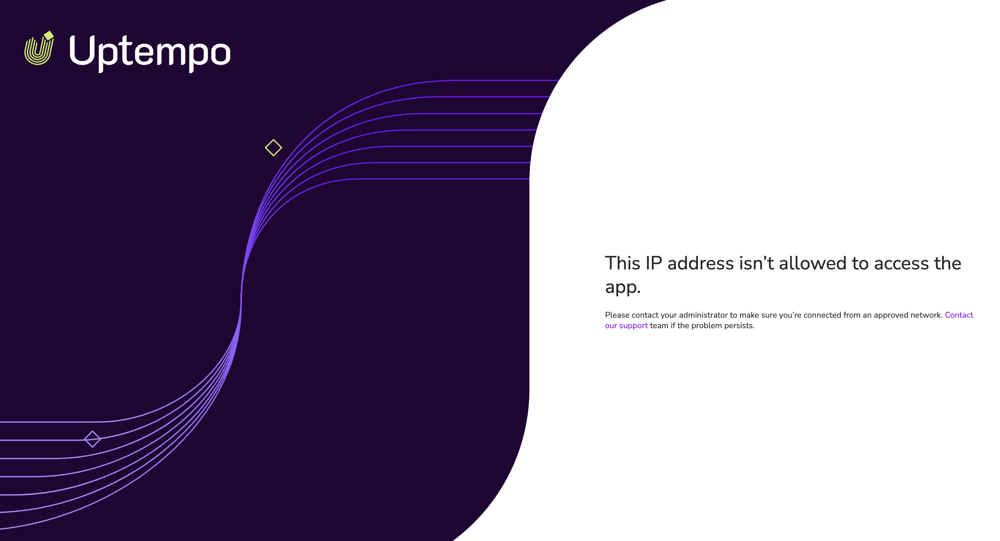

Allocadia to Uptempo transition
Welcoming our Allocadia customers to Uptempo
Starting on March 31, 2026, we're excited to welcome our Allocadia customers to the Uptempo 2.0 platform!
Our team has been working hard to make your transition as smooth as possible. While much of that effort involved technical, behind-the-scenes work, we've also built some brand-new features to add immediate value as you move onto the Uptempo platform.
In this section of the release notes, we’re highlighting these enhancements that were designed with you in mind. Because these new features are exclusive to the Uptempo 2.0 platform, you're among the very first to get access to them.
What's new in Uptempo 2.0
Limit access to approved IP addresses only
You can now configure your Uptempo instance to only allow users with approved IP addresses to sign in.
Restrict access to secure networks: Use the IP Allowlist to specify exactly which IP addresses are allowed to access your Uptempo instance, ensuring that only users on your corporate VPN or other approved networks can reach sensitive data.
Mitigate the risk of credential leaks: Prevent unauthorized access even in the event of a password leak, as login attempts from unrecognized networks are automatically blocked.
Flexible configuration: Configure allowed IPs using individual IPv4 or IPv6 addresses, or broad CIDR ranges, providing the flexibility to support complex infrastructures.
{kind=link}

- A special thank you to our Allocadia community
Usually, the IP Allowlist feature is exclusively available with the Optimize package.
To show our appreciation for your continued partnership, we're making this feature available to all customers transitioning from Allocadia completely free of charge.
→ Learn more about restricting access to your Uptempo instance based on IP address
Customize the date format
Individual Uptempo users can now customize the format Uptempo uses to display dates to their preference or regional convention.
Enhanced clarity for global users: Users can choose between five commonly used date formats (including the
dd-mm-yyyystandard used across Europe and Asia) to make financial data more intuitive and easier to read. The date format setting is specific to each user's profile, allowing individual users to personalize it to their needs.Reduce cognitive load and errors: Switching from the US-standard
mm/dd/yyyyto a preferred format eliminates the mental "translation" required when reviewing dates, and helps to ensure you're always confident about exactly which day a date like "1/3/2026" refers to.
Enhanced custom branding settings
Keep your Uptempo instance aligned with your company’s visual identity with updated custom branding settings designed for the modernized Uptempo 2.0 user interface.
Automatic settings transition: Uptempo automatically retains your existing brand colors and logos from Allocadia, ensuring your workspace stays visually aligned without any manual reconfiguration.
New customization settings: Use the new Square Logo setting to make sure your logo looks great when the new sidebar-style navigation menu is collapsed, and the new Highlight Color setting to make the active menu item easy to identify.

→ Learn more about customizing the appearance of your Uptempo instance
Streamlined upgrade path to Uptempo Campaign Management
If you're interested in using Uptempo Campaign Management to efficiently plan, run, and measure your marketing campaigns, your transition to the Uptempo 2.0 platform unlocks an easier upgrade path to Campaign Management: keep your existing investment hierarchy intact, no time-consuming reimplementation needed.
To learn more about upgrading to Uptempo Campaign Management, please reach out to your Customer Success Manager.
More new features
To learn what else is new in Uptempo with this month's release, check out What's new: 2026.3.